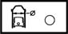
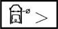

CRANK CASE
- Path
- Technical Data > Manufacturing data > 10 ENGINE > 1012 ENGINE CRANKCASE > CRANK CASE
- Kind
- technical data / specifications
- Applies to
- all engines; all production periods
- Interactive page
- https://sloeber94.github.io/elrnDB-a147/en/#/3022971
Applies to: all engines; all production periods
Cylinder bore diameter (mm) | Validity | |||
|---|---|---|---|---|
Category B | Category C | Class A | ||
82.010 ÷ 82.020 | 82.020 ÷ 82.030 | 82.000 ÷ 82.010 | 1.6 TS | |
Cylinder bore diameter (mm) | Validity | |||
Category B | Category C | Class A | ||
83.010 ÷ 83.020 | 83.020 ÷ 83.030 | 83.000 ÷ 83.010 | 2.0 TS | |
Cylinder bore ovalization (mm) | Validity |  | ||
<0.005 | 1.6 TS 2.0 TS | |||
Cylinder bore taper (mm) | Validity |  | ||
< 0.010 | 1.6 TS 2.0 TS | |||
Cylinder liner oversize (mm) | Validity |  | ||
0.1 | 1.6 TS 2.0 TS | |||
Flatness of cylinder head supporting surface (mm) | Validity |  | ||
< 0.1 | 1.6 TS 2.0 TS | |||
Main bearing seat diameter (mm) | Validity | |||
56.705 ÷ 56.718 | 1.6 TS 2.0 TS | |||